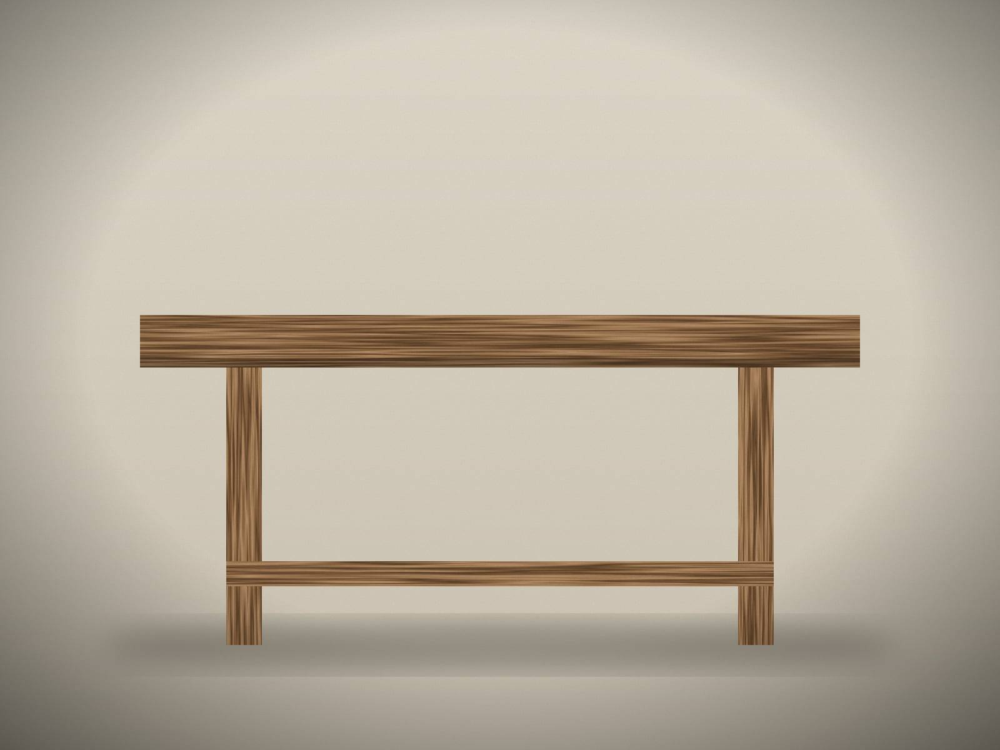
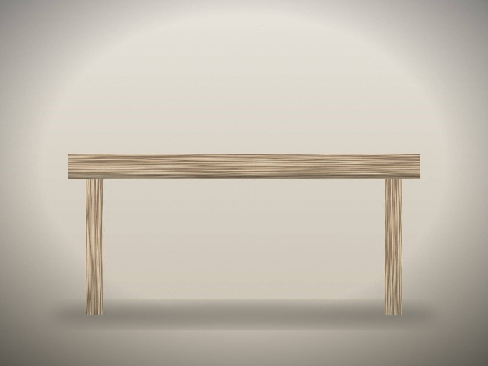

Wooden Window
A solid wood window built to your opening, your architecture and the way you live — and built to be repaired rather than replaced.
These pieces are not stock. They are starting points — each one made to order, to your dimensions, in the wood and finish we agree on together.
Made to measure, built to be repaired.
Recorded from the original, rebuilt with care.
Solid boards chosen as a set.

A table for long evenings and ordinary mornings — solid oak boards, chosen and joined by hand, made to gather marks and stories.

A generous table with a trestle base, in the tradition of rural kitchens — honest, heavy and built to be used every day.

Reduced to what matters — a clean top, slender legs and careful joints. Quiet enough for a modern interior, warm enough to live with.
Entrance and interior doors in solid wood.
Benches, shelves, built-ins — and ideas we have not made yet.
Almost anything that can be built from wood can begin with a conversation.
Tell us your ideaYou don't need a finished drawing.
Start with an idea.
Serbia · Switzerland · Europe